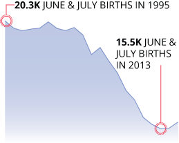
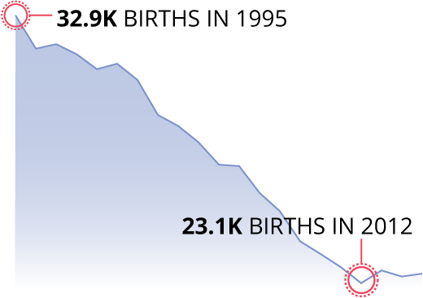
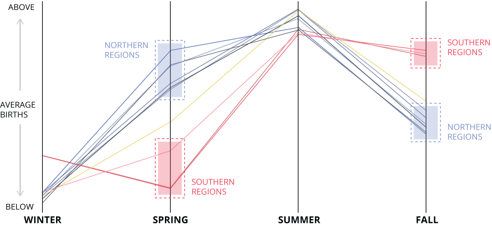
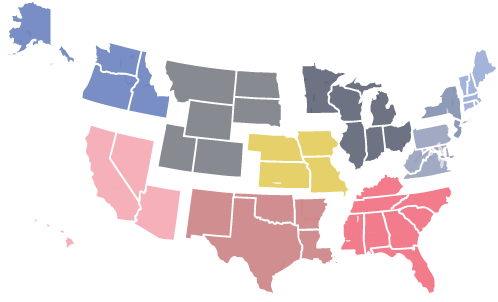

The Timing of Baby Making
Births, broken down by geography and month
In October 2012, Hurricane Sandy had just started hitting the northeast US when the theories about "Sandy babies" started trickling in. As the story goes, whenever people are stuck in one place for a long time (particularly when the power goes out), they'll resort to more carnal forms of entertainment...and become new parents nine months later.
While the "storm-induced baby boom" urban legend may be one of the most popular, the internet is frequently abuzz about what factors play a role in the timing of births. Evolutionary biology, World Series victories, terrorist activity, seasons, large storms, climate change, Superbowl wins, people don't like having sex when it's too hot...the list of potential culprits goes on and on.
We decided to give some of these hypothesis some much needed context. Thanks to the US National Vital Statistics System, we have monthly birth data for all 31 million babies born in the US between 1995 and 2015.
First things first, let's talk about Hurricane Sandy. During the storm, a reported 8 million homes and businesses lost power. According to the legend, that would make Sandy the perfect time for baby-making. But was it?
Each line on this chart represents one year of births in Suffolk County (Long Island), NY, an area hit particularly hard by the storm. The line for 2013 (the year following Hurricane Sandy) is blue. Those red dots fall approximately 9 months after Hurricane Sandy swept the area. If Hurricane Sandy had caused a mini baby-boom, we'd expect to see an increase in births around June or July 2013.
While there does appear to be a small increase in births from June to July, that seems to be a consistent annual trend in Suffolk County. In fact, if we look only at June and July births, we'll see that 2013 falls in the middle of a period of low births in the area, with no apparent baby-boom in sight.
June and July births in Suffolk County, NY
Sports Babies?
If anything can bring people together, it's shared joy over an epic win from your favorite team, right? For the Boston Red Sox, few wins were quite as big as their 2004 World Series victory, their first title since 1918. Let's look at Boston births in 2005.
Once again, there's no apparent baby-boom. And in this case, July of 2005 (just about 9 months after the win) saw the fewest summer-Boston-babies of all 21 years.
Post-Terrorism Babies?
Perhaps instead of celebration or a lack of electricity, it's a sense of shared fear and mortality-facing that causes a rise in births. Let's look at Oklahoma City following the 1995 bombing.
Nine months after the attack, Oklahoma City was looking at their lowest number of January births in all 21 years. This isn't far from the area's typical winter pattern, but there does not appear to be a "baby-boom".
Bankruptcy Babies?
Since having children is an inherently expensive activity, it's possible that an economic downturn in your city could make you re-evaluate your choice to reproduce. For instance, in 2013, the city of Detroit, MI filed for bankruptcy.
There doesn't seem to be a dramatic decrease in births immediately following the formal bankruptcy in Detroit. However, annual births in the city have declined about 30% since 1995, so the effect of economic turmoil in the area may be more long-term.
Annual births in Wayne County, MI
For comparison, the population in Wayne County decreased about 15% in that same time, and the national birth count increased about 1%.
Seasonal Babies?
Apart from specific events, researchers suspect that the timing of births may be seasonal. To look for seasonal trends, we'll combine each of our 21 lines into one representing the average number of births per month. The shaded area surrounding the line represents the variation* in that average across 21 years.
* Methodology Note: The solid line represents the median number of births per month and the upper and lower edges of the shaded area represent the upper and lower quartiles of the data. Think of this as a series of box plots connected together.
While seasonal trends are harder to spot in counties with relatively small populations, they're more noticeable on the state-level. For instance, let's look at Florida. Every year, the sunshine state sees its biggest spike in births in the late summer and early fall. That places the highest conception time for Floridians around October through February.
The pattern of few spring-time babies and lots of late-summer babies is common in the southern states, but is less pronounced in the northern states. Let's look at Maine. That spring-time dip virtually disappears with birth counts remaining relatively consistent throughout the spring and summer. This places the largest number of Maine conceptions in August to December.
It seems like latitude, or more likely climate, has some impact on the seasonality of conception and births in the US and not just for Maine and Florida. Let's look at this seasonality a little closer. Here, each line represents one of ten regions* in the US.
You'll notice that all 10 regions see an increase in births in the summer months, but beyond the summer season, the number of births differs between northern and southern regions. In the springtime, more northern babies are born, while southern babies are born in larger numbers in the fall. Counting backwards 9 months, we can assume that northerners conceive more babies in the summer and fall than the rest of the year, whereas southerners conceive more in the fall and winter.
*Methodology Note: For this figure, the country was divided into the 10 Standard Federal Regions established by the US Office of Management and Budget. A map displaying those 10 regions can be found at the right. The slope graph shows the z-score for each region, that is, how different each seasonal sum of births is from the annual average in that region. The seasons were defined as follows: Winter: December, January, February; Spring: March, April, May; Summer: June, July, August; Fall: September, October, November.
This observation has been made in several scientific studies, many of which indicate that the extreme heat in the summertime (particularly in the southern US) may prohibit conception. Whether this effect is behavioral (people don't have as much sex when it's too hot out), physiological (both sperm motility and ovarian function may vary by season), or the result of some other cause is still up for debate.
So then, what does impact the timing of baby making the US? The short answer: we still don't really know. Perhaps it's some combination of everything mentioned above. Maybe people are actually planning their pregnancies and aiming to have newborns in late summer instead of winter (even if that means being seriously pregnant in the hottest months of the year).
What we can say is that the distribution of human conception and births is complicated. But at least you now have a tool to pull up every time you argue with someone about whether that storm/sports win/etc. caused an increase in births.